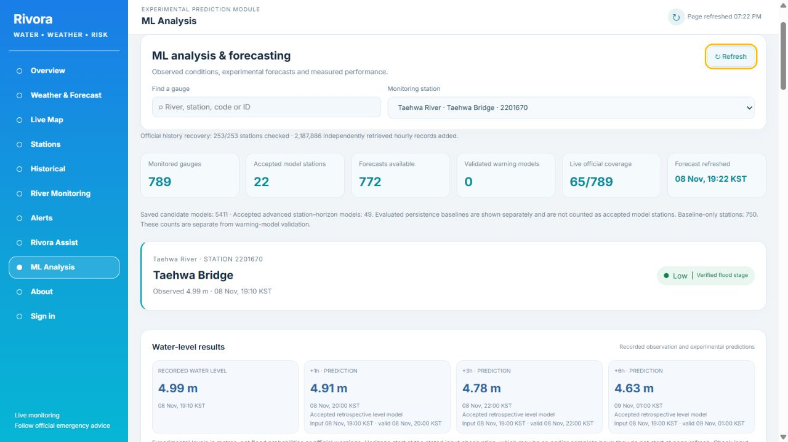

Snapshot 2026-11-08T10:21:35.400Z. All values below are actual executed results. An accepted retrospective model is separate from a live usable horizon and from a calibrated warning probability.
| Measure | Before | After |
|---|---|---|
| Monitored stations | 789 | 789 |
| Eligible evaluated level artifacts | 530 | 772 |
| Fitted candidate station–horizon models | 3230 | 5411 |
| Accepted advanced horizons | 8 | 49 |
| Stations with accepted artifacts | 5 | 27 |
| Live forecast outputs (including labelled baselines) | 530 | 772 |
| Live accepted model stations | Not separately counted in old UI | 22 |
Current live accepted horizons: {'1': 12, '3': 15, '6': 14}. Live baseline-only stations: 750. Live counts depend on real input completeness, freshness and valid times. They are not interchangeable with the number of trained artifacts.
Authentic source reconciliation raised the usable labelled station-event count from 81 to 165. Calibration now has 13 events and decision-threshold selection has 3; the existing minimum is 2 per block. There is no remaining event-count deficit under that minimum. More events do not override failed accuracy gates.
| Acceptance gate | Actual | Required | Outcome |
|---|---|---|---|
| Precision | 0.018760 | >= 0.2 | FAILED |
| Event detection recall | 0.904762 | >= 0.8 | PASSED |
| Brier score | 0.000153 | Less than baseline 0.000149 | FAILED |
No uncalibrated score is published as a percentage forecast. The 2026 final period is retrospective and was not reused for tuning. The classifier, calendar policy, 72-hour purge and acceptance criteria remain unchanged. The expanded evidence version and derived validation cutpoints are documented separately.
Metres; independent chronological retrospective holdouts. Each comparison uses the same station–horizon samples. Adding stations changes network composition; it is not itself evidence of better aggregate accuracy.
| Station / code | Horizon | Method | Samples | MAE | RMSE | Persistence MAE | Test period |
|---|---|---|---|---|---|---|---|
| Taehwa Bridge / 2201670 | 1h | RIDGE | 1405 | 0.036994 | 0.047460 | 0.062327 | 2026-09-11 01:00:00 – 2026-11-08 13:00:00 |
| Taehwa Bridge / 2201670 | 3h | ELASTIC_NET | 1403 | 0.056185 | 0.070829 | 0.147969 | 2026-09-11 01:00:00 – 2026-11-08 11:00:00 |
| Taehwa Bridge / 2201670 | 6h | ELASTIC_NET | 1400 | 0.060739 | 0.075866 | 0.211700 | 2026-09-11 01:00:00 – 2026-11-08 08:00:00 |
| Jeongseon First Bridge / 1001655 | 1h | HIST_GRADIENT_BOOSTING | 1405 | 0.008158 | 0.011416 | 0.012712 | 2026-09-11 03:00:00 – 2026-11-08 15:00:00 |
| Changdong Bridge / 1018669 | 6h | HIST_GRADIENT_BOOSTING | 1400 | 0.013868 | 0.063245 | 0.018350 | 2026-09-11 03:00:00 – 2026-11-08 10:00:00 |
| Sinseong Bridge (Hwasun County) / 5003620 | 1h | HIST_GRADIENT_BOOSTING | 1405 | 0.005178 | 0.014022 | 0.006555 | 2026-09-11 03:00:00 – 2026-11-08 15:00:00 |
| Sinseong Bridge (Hwasun County) / 5003620 | 3h | HIST_GRADIENT_BOOSTING | 1403 | 0.014299 | 0.040836 | 0.018510 | 2026-09-11 03:00:00 – 2026-11-08 13:00:00 |
| Nasan Bridge (Hampyeong County) / 5005650 | 1h | HIST_GRADIENT_BOOSTING | 1405 | 0.004123 | 0.013330 | 0.005637 | 2026-09-11 03:00:00 – 2026-11-08 15:00:00 |
| Nasan Bridge (Hampyeong County) / 5005650 | 3h | HIST_GRADIENT_BOOSTING | 1403 | 0.011520 | 0.042493 | 0.016557 | 2026-09-11 03:00:00 – 2026-11-08 13:00:00 |
| Tangeum Bridge (Chungju City) / 1005605 | 1h | ELASTIC_NET | 1405 | 0.013912 | 0.019077 | 0.033310 | 2026-09-11 03:00:00 – 2026-11-08 15:00:00 |
| Tangeum Bridge (Chungju City) / 1005605 | 3h | ELASTIC_NET | 1403 | 0.043041 | 0.059769 | 0.091411 | 2026-09-11 03:00:00 – 2026-11-08 13:00:00 |
| Tangeum Bridge (Chungju City) / 1005605 | 6h | ELASTIC_NET | 1400 | 0.063895 | 0.084476 | 0.150421 | 2026-09-11 03:00:00 – 2026-11-08 10:00:00 |
| Cheonjeonri (Chuncheon City) / 1012685 | 3h | ELASTIC_NET | 1403 | 0.247017 | 0.295103 | 0.298888 | 2026-09-11 03:00:00 – 2026-11-08 13:00:00 |
| Cheonjeonri (Chuncheon City) / 1012685 | 6h | RIDGE | 1400 | 0.243464 | 0.301154 | 0.460464 | 2026-09-11 03:00:00 – 2026-11-08 10:00:00 |
| Gungnae Bridge (Seongnam City) / 1018650 | 1h | ELASTIC_NET | 1405 | 0.006704 | 0.018091 | 0.007744 | 2026-09-11 03:00:00 – 2026-11-08 15:00:00 |
| Ogeum Bridge (Seoul City) / 1018697 | 1h | ELASTIC_NET | 1405 | 0.010359 | 0.030575 | 0.012847 | 2026-09-11 03:00:00 – 2026-11-08 15:00:00 |
| Ogeum Bridge (Seoul City) / 1018697 | 3h | ELASTIC_NET | 1403 | 0.024392 | 0.068213 | 0.032459 | 2026-09-11 03:00:00 – 2026-11-08 13:00:00 |
| Ogeum Bridge (Seoul City) / 1018697 | 6h | ELASTIC_NET | 1400 | 0.034131 | 0.103323 | 0.051050 | 2026-09-11 03:00:00 – 2026-11-08 10:00:00 |
| Doduri Bridge 2 (Bucheon City) / 1019620 | 1h | ELASTIC_NET | 1405 | 0.009174 | 0.022004 | 0.014135 | 2026-09-11 03:00:00 – 2026-11-08 15:00:00 |
| Agame Bridge (Paju City) / 1023680 | 3h | HIST_GRADIENT_BOOSTING | 1403 | 0.089217 | 0.195379 | 0.228168 | 2026-09-11 03:00:00 – 2026-11-08 13:00:00 |
| Agame Bridge (Paju City) / 1023680 | 6h | HIST_GRADIENT_BOOSTING | 1400 | 0.099952 | 0.208631 | 0.249836 | 2026-09-11 03:00:00 – 2026-11-08 10:00:00 |
| Je1yeoryang Bridge (Jeongseon County) / 1001626 | 1h | HIST_GRADIENT_BOOSTING | 1405 | 0.013875 | 0.020598 | 0.028797 | 2026-09-11 03:00:00 – 2026-11-08 15:00:00 |
| Je1yeoryang Bridge (Jeongseon County) / 1001626 | 3h | HIST_GRADIENT_BOOSTING | 1403 | 0.020683 | 0.028843 | 0.058232 | 2026-09-11 03:00:00 – 2026-11-08 13:00:00 |
| Nampyeongdae Bridge (Jeongseon County) / 1001629 | 1h | HIST_GRADIENT_BOOSTING | 1405 | 0.004840 | 0.006942 | 0.006534 | 2026-09-11 03:00:00 – 2026-11-08 15:00:00 |
| Nampyeongdae Bridge (Jeongseon County) / 1001629 | 3h | HIST_GRADIENT_BOOSTING | 1403 | 0.008950 | 0.012038 | 0.014455 | 2026-09-11 03:00:00 – 2026-11-08 13:00:00 |
| Bonggye Bridge (Chungju City) / 1004696 | 3h | ELASTIC_NET | 1403 | 0.024358 | 0.036453 | 0.030278 | 2026-09-11 05:00:00 – 2026-11-08 15:00:00 |
| Bonggye Bridge (Chungju City) / 1004696 | 6h | ELASTIC_NET | 1400 | 0.025569 | 0.040008 | 0.052657 | 2026-09-11 05:00:00 – 2026-11-08 12:00:00 |
| Siheungdae Bridge (Gwangmyeong City) / 1018693 | 6h | ELASTIC_NET | 1400 | 0.016841 | 0.042911 | 0.027771 | 2026-09-11 05:00:00 – 2026-11-08 12:00:00 |
| Jeonryuri (Gimpo City) / 1019675 | 1h | HIST_GRADIENT_BOOSTING | 1405 | 0.109444 | 0.173639 | 0.540655 | 2026-09-11 05:00:00 – 2026-11-08 17:00:00 |
| Jeonryuri (Gimpo City) / 1019675 | 3h | HIST_GRADIENT_BOOSTING | 1403 | 0.196826 | 0.283114 | 1.356600 | 2026-09-11 05:00:00 – 2026-11-08 15:00:00 |
| Jeonryuri (Gimpo City) / 1019675 | 6h | HIST_GRADIENT_BOOSTING | 1400 | 0.196222 | 0.263537 | 1.858564 | 2026-09-11 05:00:00 – 2026-11-08 12:00:00 |
| Bukpyeong Bridge (Donghae City) / 1302668 | 3h | RIDGE | 1403 | 0.047246 | 0.060319 | 0.072195 | 2026-09-11 05:00:00 – 2026-11-08 15:00:00 |
| Bukpyeong Bridge (Donghae City) / 1302668 | 6h | RIDGE | 1400 | 0.050440 | 0.064088 | 0.098921 | 2026-09-11 05:00:00 – 2026-11-08 12:00:00 |
| Jungrang Bridge (Seoul City) / 1018675 | 6h | ELASTIC_NET | 1346 | 0.016301 | 0.074812 | 0.020163 | 2026-09-11 01:00:00 – 2026-11-08 08:00:00 |
| Hangangdae Bridge (Seoul City) / 1018683 | 1h | BOUNDED_TREND | 1405 | 0.063025 | 0.126131 | 0.080783 | 2026-09-11 05:00:00 – 2026-11-08 17:00:00 |
| Samhwa Bridge (Yeoncheon County) / 1023640 | 3h | HIST_GRADIENT_BOOSTING | 1403 | 0.010061 | 0.017460 | 0.012381 | 2026-09-11 05:00:00 – 2026-11-08 15:00:00 |
| Samhwa Bridge (Yeoncheon County) / 1023640 | 6h | ELASTIC_NET | 1400 | 0.017759 | 0.028222 | 0.021893 | 2026-09-11 05:00:00 – 2026-11-08 12:00:00 |
| Gangchon Bridge (Chuncheon City) / 1013645 | 6h | ELASTIC_NET | 1400 | 0.266896 | 0.337243 | 0.404786 | 2026-09-11 05:00:00 – 2026-11-08 12:00:00 |
| Tongildae Bridge (Paju City) / 1023670 | 3h | RIDGE | 1403 | 0.310028 | 0.420330 | 0.965182 | 2026-09-11 05:00:00 – 2026-11-08 15:00:00 |
| Tongildae Bridge (Paju City) / 1023670 | 6h | ELASTIC_NET | 1400 | 0.262628 | 0.372498 | 1.310164 | 2026-09-11 05:00:00 – 2026-11-08 12:00:00 |
| Gunmun Bridge (Pyeongtaek City) / 1101635 | 1h | HIST_GRADIENT_BOOSTING | 1356 | 0.008776 | 0.025379 | 0.010310 | 2026-09-11 01:00:00 – 2026-11-08 13:00:00 |
| Dongyeon Bridge (Pyeongtaek City) / 1101670 | 1h | HIST_GRADIENT_BOOSTING | 1356 | 0.008481 | 0.023806 | 0.010553 | 2026-09-11 01:00:00 – 2026-11-08 13:00:00 |
| Neobudae Bridge (Seoul City) / 1018695 | 1h | ELASTIC_NET | 1356 | 0.010211 | 0.029325 | 0.012463 | 2026-09-11 01:00:00 – 2026-11-08 13:00:00 |
| Neobudae Bridge (Seoul City) / 1018695 | 3h | ELASTIC_NET | 1352 | 0.024526 | 0.076134 | 0.030547 | 2026-09-11 01:00:00 – 2026-11-08 11:00:00 |
| Dongseong Bridge (Nonsan City) / 3012690 | 3h | ELASTIC_NET | 1352 | 0.013699 | 0.028384 | 0.018676 | 2026-09-11 05:00:00 – 2026-11-08 15:00:00 |
| Dongseong Bridge (Nonsan City) / 3012690 | 6h | ELASTIC_NET | 1346 | 0.025021 | 0.051307 | 0.034941 | 2026-09-11 05:00:00 – 2026-11-08 12:00:00 |
| Jwasuyeong Bridge (Busan City) / 2302661 | 1h | ELASTIC_NET | 1405 | 0.036144 | 0.047075 | 0.117338 | 2026-09-11 05:00:00 – 2026-11-08 17:00:00 |
| Jwasuyeong Bridge (Busan City) / 2302661 | 3h | RIDGE | 1403 | 0.056879 | 0.073035 | 0.313521 | 2026-09-11 05:00:00 – 2026-11-08 15:00:00 |
| Jwasuyeong Bridge (Busan City) / 2302661 | 6h | ELASTIC_NET | 1400 | 0.056668 | 0.073050 | 0.448014 | 2026-09-11 05:00:00 – 2026-11-08 12:00:00 |
| Reason | Stations |
|---|---|
| CONSTANT_READING_REVIEW | 6 |
| REFERENCE_OR_MEASUREMENT_REVIEW_REQUIRED | 6 |
| INSUFFICIENT_PROVENANCED_CHRONOLOGICAL_SAMPLES | 4 |
| INSUFFICIENT_RECENT_PROVENANCED_COVERAGE | 1 |
Station diagnostic CSV · Full measured requirements, periods, gaps, provenance, rainfall and artifact evidence
253 blocked stations were checked; 2,187,886 independently retrieved official hourly rows were added to derived history. Existing measurements were preserved. The Geum archive reconciliation checked all 175 bulletins, matched station identities and typed notices, verified annual sequences, and added 154 notices (88 issuances) and 39 office-specific coverage intervals. Matching collection added 600,755 authentic raw water rows and 467,113 rainfall rows. These are storage additions, not counts of new independent storms.
Historical datum epochs and relocations remain unavailable; current reference holds were retained. Temporal storm proxies are not externally certified storm labels. Point rainfall is not catchment rainfall. Original observation-arrival vintages remain unavailable. Accepted outputs support retrospective research, and baseline outputs support demonstration; neither establishes operational flood-warning reliability.

313 backend, 30 Python and 34 frontend tests passed; lint and production build passed. Seven live station APIs and the frontend proxy passed. The existing large map bundle warning remains.